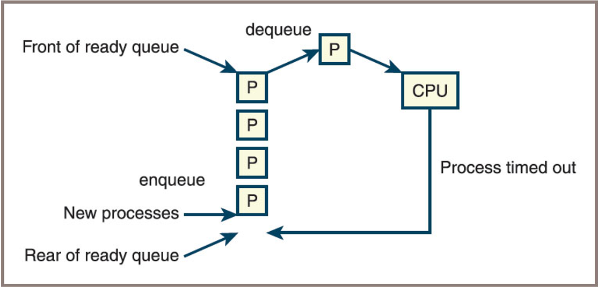
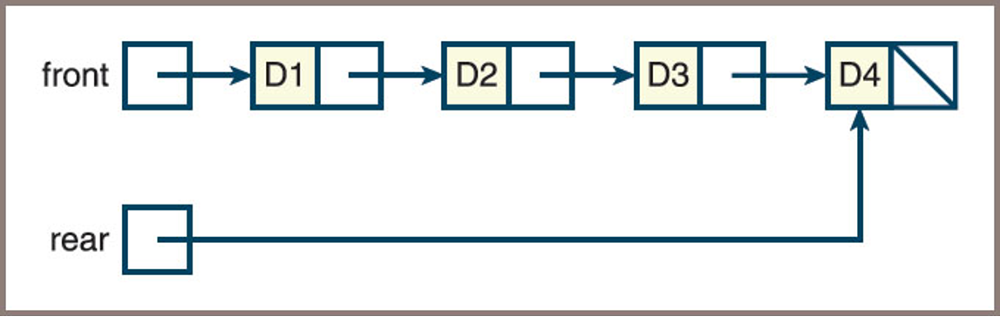
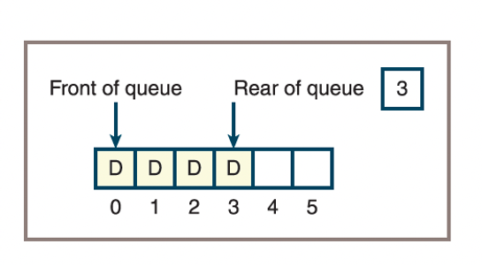
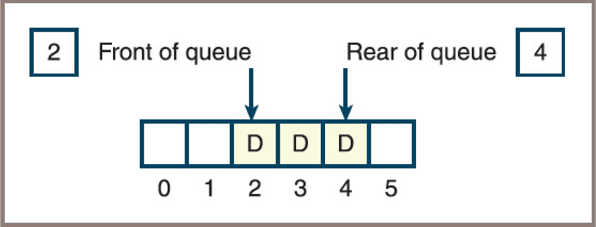

Queues
Fred Agbo
2025-10-22
Announcements
- Welcome!
- Mini project 2 is due on next week Monday October 27
Queues Data Structures
Learning Objectives
- Describe the features of a queue and the operations on it
- Choose a queue implementation based on its performance characteristics
- Recognize applications where it is appropriate to use a queue
- Explain the difference between a queue and a priority queue
- Recognize applications where it is appropriate to use a priority queue
Overview of Queues (1 of 3)
- Queues are linear collections
- Insertions occur only at one end, called the rear
- Removals occur only at the other end, called the front
- Queues follow a first-in-first-out (FIFO) protocol
Overview of Queues (2 of 3)
Two fundamental operations:
add: adds an item to the rear of the queue- Another term as
addoperation isenqueue
- Another term as
pop: removes an item from the front of the queue- Another term for
popoperation isdequeue
- Another term for
Overview of Queues (3 of 3)
- The states a queue

- Initially, the queue is empty:
- Then an item called
ais added - Next, three more items called
b,c, anddare added - After which an item is popped, and so forth
Priority Queues
- A priority queue is a special type of queue:
- Assigns a priority to each item.
- Items with higher priority are removed before items with lower priority.
- If two items have the same priority, removal follows the FIFO (first-in-first-out) order.
- Common implementations:
- Heap-based (efficient for insert and remove)
- Unsorted/Sorted lists (less efficient)
Queue Applications:
- Task scheduling
- Dijkstra’s shortest path algorithm
- Event-driven simulations
- CPU access — Processes are queued for access to a shared CPU
- Disk access — Processes are queued for access to a shared secondary storage device
- Printer access — Print jobs are queued for access to a shared laser printer
Emulating a Queue with a Python List
- One can use a Python list to emulate a queue:
- Use
appendto add an item to the rear of the queue - Use
popto remove and return the item at the front of the queue
- Use
- Drawbacks:
- All other list operations can manipulate the queue as well
- Additional operation:
- A
peekoperation is useful to return the item at the front of the queue without removing it
- A
The Queue Interface (Part 1)
| Queue Method | What It Does |
|---|---|
| q.isEmpty() | Returns True if q is empty or False otherwise. |
| len(q) | Same as len(q). Returns the number of items in q. |
| str(q) | Same as str(q). Returns the string representation of q. |
| q.__iter__() | Same as iter(q), or for item in q. Visits each item in q, from front to rear. |
| q.__contains__(item) | Same as item in q. Returns True if item is in q or False otherwise. |
The Queue Interface (Part 2)
| Queue Method | What It Does |
|---|---|
| q1__add__(q2) | Same as q1 + q2. Returns a new queue containing the items in q1 followed by the items in q2. |
| q.__eq__(anyObject) | Same as q == anyObject. Returns True if q equals anyObject or False otherwise. Two queues are equal if items match. |
| q.clear() | Makes q become empty. |
| q.peek() | Returns the item at the front of q. Precondition: q must not be empty; raises a KeyError if the queue is empty. |
| q.add(item) | Adds item to the rear of q. |
| q.pop() | Removes and returns the item at the front of q. Precondition: q must not be empty; raises a KeyError if empty. |
Effects of Queue Operations
| Operation | State of the Queue after Operation | Value Returned | Comment |
|---|---|---|---|
| q = |
Initially, the queue is empty. | ||
| q.add(a) | a | The queue contains the single item a. | |
| q.add(b) | a b | a is at the front of the queue and b is at the rear. | |
| q.add(c) | a b c | c is added at the rear. | |
| q.isEmpty() | a b c | False | The queue is not empty. |
| len(q) | a b c | 3 | The queue contains three items. |
| q.peek() | a b c | a | Return the front item on the queue without removing it. |
| q.pop() | b c | a | Remove the front item from the queue and return it. b is now the front item. |
| q.pop() | c | b | Remove and return b. |
| q.pop() | c | Remove and return c. | |
| q.isEmpty() | True | The queue is empty. | |
| q.peek() | exception | Peeking at an empty queue throws an exception. | |
| q.pop() | Exception | Trying to pop an empty queue throws an exception. | |
| q.add(d) | d | d is the front item. |
Two Applications of Queues
1. Computer Simulations
- Computer simulations are used to study behavior of real-word systems
- Especially when it is impractical or dangerous to experiment directly
- Examples
- Simulation that mimics traffic flow on a busy highway
- Simulation can help managers schedule employees and monitor technology
- Simulation programs use a simple technique to mimic variability:
Two Applications of Queues
1. Computer Simulations
- Suppose new customers are expected on average once every 4 minutes
- Then, during each minute of simulated time, a program can generate a random number between 0 and 1
- If the number is less than 1/4, the program adds a new customer to a checkout line; otherwise, it does not
- Then, during each minute of simulated time, a program can generate a random number between 0 and 1
- Queues are used to model waiting lines in simulations (e.g., customers at a bank, packets in a network).
- Events are processed in the order they arrive (FIFO).
- The queue helps manage entities waiting for service and track system performance.
Two Applications of Queues
2. Round-Robin CPU Scheduling
- Operating systems use queues to manage processes waiting for CPU time.
- Each process is added to the rear of the queue.
- The process at the front is given a time slice to execute, then moved to the rear if not finished.
- Ensures fair allocation of CPU resources among all processes.
Round-Robin CPU Scheduling
- Scheduling processes for a C P U
- 
Implementations of Queues
- The structure of a queue lends itself to either an array implementation or a linked implementation:
- Similar to approaches used for stacks in the previous chapter
- We will then look at the Linked implementation first then Array implementation
- Similar to approaches used for stacks in the previous chapter
A Linked Implementation of Queues
- Both
LinkedStackandLinkedQueueclasses- Use a singly linked Node class to implement nodes
- The operation
popremoves the first node in the sequence in both collections
LinkedQueue.addandLinkedStack.pushdiffer:pushadds a node at the head of the sequenceaddadds a node at the tail
- To provide fast access to both ends of a queue’s linked structure,
- There are external pointers to both ends
A Linked Implementation of Queues
- A linked queue with four items
- 
A Linked Implementation of Queues
- The instance variables front and
rearof theLinkedQueueclass are given an initial value ofNone - A variable named
size, already defined in the collection framework, tracks the number of elements currently in the queue - During an
addoperation,- Create a new node
- Set the next pointer of the last node to the new node
- Set the variable
rearto the new node
A Linked Implementation of Queues
- Adding an item to the rear of a linked queue

A Linked Implementation of Queues
- Code for the add method:
A Linked Implementation of Queues
- If the queue becomes empty after a pop operation, the
frontandrearpointers must both be set toNone
An Array Implementation
- The array implementation of a queue must access items at the logical beginning and the logical end
- Best to approach the problem in a sequence of three attempts
An Array Implementation
First attempt
- Fixes the front of the queue at index position 0 and maintains an index variable, called
rear, that points to the last item at position n − 1- 
An Array Implementation
Second attempt
You can avoid
pop’s linear behavior by not shifting items left each time the operation is appliedThe modified implementation maintains a second index, called front , that points to the item at the
frontof the queue Thefrontpointer starts at 0 and advances through the array as items are poppedFigure below shows such a queue after five
addand twopopoperations- 
An Array Implementation
Third attempt
By using a
circular array implementation, you can simultaneously achieve good running times for bothaddandpopThe implementation resembles the previous one in one respect: the
frontandrearpointers both start at the beginning of the arrayFigure below wraps data around a circular array implementation of a queue

An Array Implementation
Third attempt
- After resizing, you would like the queue to occupy the initial segment of the new array with the
frontpointer set to 0 - Perform the following steps:
- Create a new array that is twice the size of the current array
- Iterate through the queue, using its
forloop to copy items to the new array, starting at position 0 in that array - Reset the
itemsvariable to the new array - Set
frontto 0 andrearto the queue’s length minus 1